第7章 重要的反转形态：续
7.1 头肩底
当趋势从下跌反转为上涨时，可能会形成另外一种头肩形态，即头肩底，其价格走势正好与头肩顶相反，也就是说，头朝下。（编者按：本版的编者始终对“头肩底”这种说法的不明确性感到不满，因此为它另外取了名字，叫作“基尔罗伊底部”，见图7-4。）头肩底的成交量形态与头肩顶基本相同，但后半部分有很大变化，我们在后文将详细讨论。对头肩底，我们有如下描述，与头肩顶不同的内容用黑体标出（见图7-1至图7-25）。
A.价格下跌，形成一个较大的跌势，成交量明显放大，之后有一次短线修复，其成交量低于之前跌势及底部的水平。这个阶段是“左肩”。第9版编者按：或称“左手”。
B.价格再次下探，低于左肩的底部，成交量有所增加（相较于左肩的修复），但是一般不会达到左肩下跌时的成交量水平 ，之后是再次修复，高度高于左肩的底部水平，成交量可能会增加，也可能超过左肩修复时的成交量水平 。这个阶段是“头部”。第9版编者按：或称“鼻子”。
C.价格第三次下跌，但低点不低于头部的低点，成交量较左肩和头部明显减少。这个阶段是“右肩”。第9版编者按：或称“右手”。
D.最后，价格上攻并超过颈线（第9版编者按：或称“栅栏线”）3%，交投明显活跃起来，冲过颈线时伴随着明显的成交量爆发 。这个阶段是“确认”或“突破”。
由此可见，头肩顶和头肩底的根本区别是成交量的不同。头肩底形态的交投活动在头部开始时呈升势特征，在头部的上涨阶段明显放大，且在右肩的上涨过程中放大得尤为明显。穿透颈线时必须伴有放量，否则该突破不能作为确认头肩底的依据。
这里有一个重要的基本技术原则值得讨论。华尔街有一个经典说法：股票涨起来需要买盘推动，跌起来却像自由落体。因此我们相信，头肩顶中出现的任何向下的颈线突破（达到一定水平），哪怕成交量再清淡，也可以确认转势。而头肩底中的向上的颈线突破则必须伴有高成交量。量能过轻的向上突破可能是不成熟的，还需要一段时间来夯实底部直至真正反弹，否则就可能完全是个假突破，值得等待与观望。本章后续部分将继续讨论适用于其他反转形态的成交量变化差异。
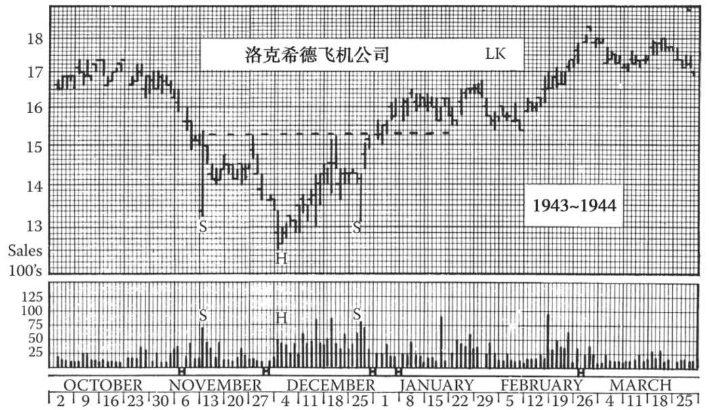
图7-1 在1940～1941年以来漫长熊市的最后一个阶段，洛克希德飞机公司的股价在1943年10月形成了一个“圆顶”，然后形成了一个明显的为期两个月的头肩底。在上图中，12月初及1月第1周的反弹中的成交量符合前文B点和D点中的描述。洛克希德飞机公司于1944年6月再度跌至15美元，然后于11月迅速反弹到23美元，并最终于1946年1月达到45美元。对数坐标图表有一个优点就是有扩展性，因此能引起投资者注意低价水平时形成的重要形态，等差坐标很难做到这一点
头肩顶和头肩底并无其他原则性差异。一般来说，头肩底更长、更平，也就是说，需要花更长的时间形成，特别是在长线趋势出现反转时。底部的总体成交量一般低于顶部，且反转更加平缓。在头肩顶的构建过程中，左肩的交投活动常常超过整个升势中其他上涨过程的水平。跌势中，早期的下跌可能会有恐慌性抛盘，其成交量可能为整个底部形成过程中每次下跌的最高水平。但这些差异都不违背我们前文对头肩形态的描述。
头肩底的影响及应用在所有方面都与头肩顶一样。头肩底也趋于对称，但颈线的斜度和肩部的相对大小则与头肩顶一样会有差异。头肩底中价格第一次突破颈线后的回调概率和幅度则与头肩顶中价格第一次突破颈线后的反抽情形相似。
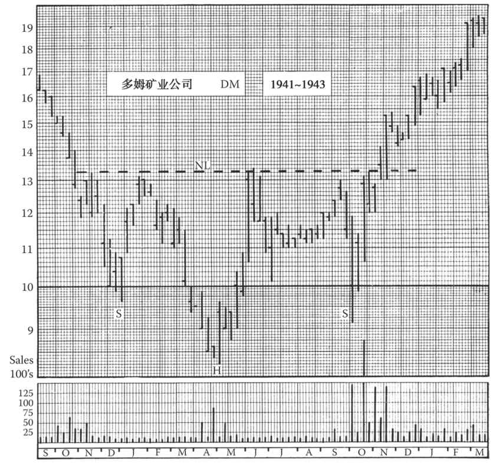
图7-2 周线图对分析长线底部反转十分有用，因为底部形态一般比顶部形态的形成时间更长。1942年长线趋势反转时，多姆矿业公司经历了一个典型的头肩底过程，长达13个月。请注意这段时间的成交量变化（日线图能更清楚地展示成交量的具体变化）。该底部形态即使在等差坐标图上也显而易见。该股股价在1944年达到了25美元
7.2 复合头肩形态
我们之前研究的头肩形态虽然包含一些细微的变化，但整体来看仍然清晰明了，都由3个明确的阶段组成。现在，我们将要分析的形态和之前的头肩形态具有相同的技术意义，但由更多阶段组成，各阶段之间并非泾渭分明。这组形态称为“复合头肩顶”和“复合头肩底”，也称为复杂形态。我们不必花太多笔墨阐述这组形态，只需要知道这组形态的左肩、头部和右肩都可能出现超过2次。
在复合头肩形中，各阶段的组合方式不一而足，本章所配图表只介绍其中少数几种。复合头肩形可能在长线趋势的底部和顶部出现，但出现于底部的概率更大。另外，该形态较少出现于中线反转的过程中。
一种常见的复合头肩形由2个大小相近的左肩、1个头部和2个大小相近的右肩组成。另一种形态由2个头部、2个或多个左肩及右肩组成。还有一种形态经常出现于长线反转时，由2个左肩、2个右肩和1个头部组成，并且头部本身就包含了1个小型的头肩形态。
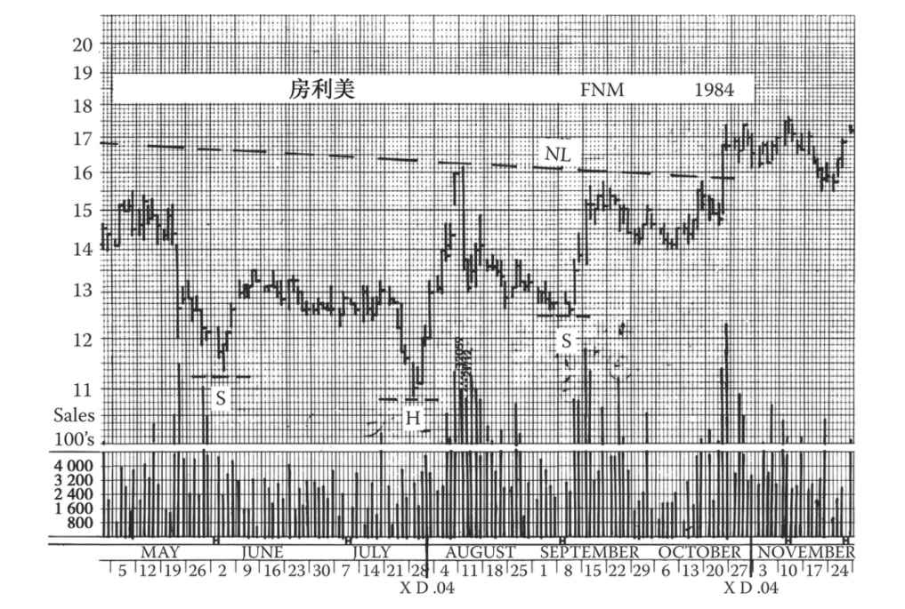
图7-3 6月以来，利率下行趋势明显，所以联邦国民抵押贷款协会（即房利美）股价走低也是意料之中的事。同时，房利美的头肩底从3月延伸至10月，呼应了同期美国国债复杂的头肩底（1984年12月），尽管两个形态存在细微的时间差
图7-4 编者按：虽然看上去像是个讽刺漫画，这张图却更加准确地描绘了头肩底的形态。图中的左手代表左肩，右手代表右肩，鼻子代表头部，栅栏线代表颈线。我让我的所有学生都使用本图的名称，因为比起“头部在下的颠倒的头肩形”这种荒谬的说法，这些名称显然更有意义。100年之后，本图的这些术语将会被大众接受，而“头肩底”的说法将会消失 [1]
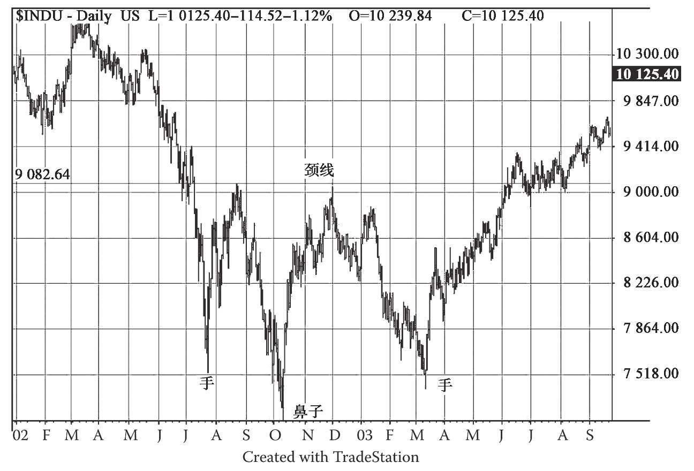
图7-5 2001～2002年的熊市（或熊市第一阶段）以头肩底的形态告终。在7个半月的时间里（至2003年3月），该形态的走势和熊市反弹的过程非常相似。但是一旦颈线被突破，我们就可以完全确定这是个底部。市场在颈线附近逗留了几个月后转牛。之后，市场受到了复杂的政经事件影响：2001年9月11日的恐怖主义袭击结束了20世纪90年代以来的股市狂热；小布什政府推行了轻率的减税政策。在减税扩支的政策和反恐战争的刺激下，市场强势上涨。在这张图中，读者可以看到下跌趋势线和头肩底形态的突破代表了市场由熊转牛的开始
7.3 对称倾向
我们在讨论简单头肩形时提到过对称倾向。复合（或称复杂）头肩形态的对称倾向比简单头肩形更强，甚至可直接作为制定交易策略的依据。如果左侧有两个肩膀，则右侧几乎必定出现两个幅度及时长与左侧相似的肩膀（只有当右肩浮现后，你才能辨识出复合头肩形）。大多数情况下，除了成交量，复合头肩形的左右两侧几乎完全对称。
复合头肩形的颈线有时很难画，因为肩与肩、肩与头之间的回调不一定止步于同一条线。在复合头肩形中，很少出现上倾颈线和下倾颈线；颈线几乎总是接近于水平。有时，很容易估测颈线的实际位置。但更多情况下，存在两条颈线，即内颈线和外颈线。仅当外颈线被突破时，复合头肩形才算被有效突破（这也体现了上文所讲的对称倾向）。
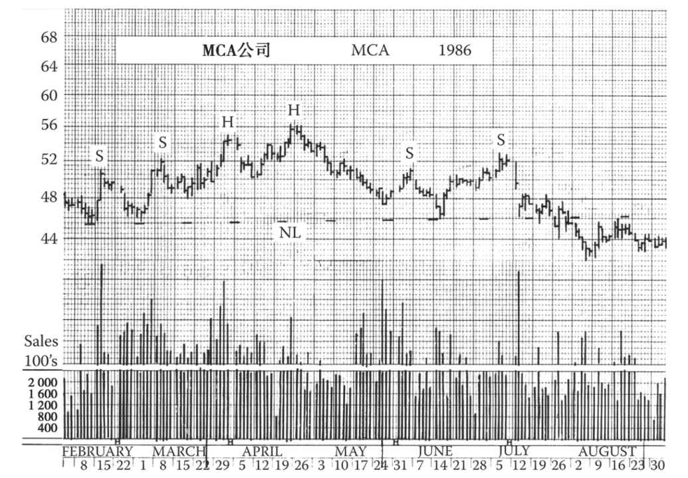
图7-6 MCA公司1980～1986年涨势凌厉。1986年起，股价虽屡次试探1985年高点，但走势越来越疲软；尽管股价于4月终于登上历史新高，但随后逐级下调，回天乏力。实际上，随着股价略微跌破长期颈线，浮现出一个巨大的复合头肩顶
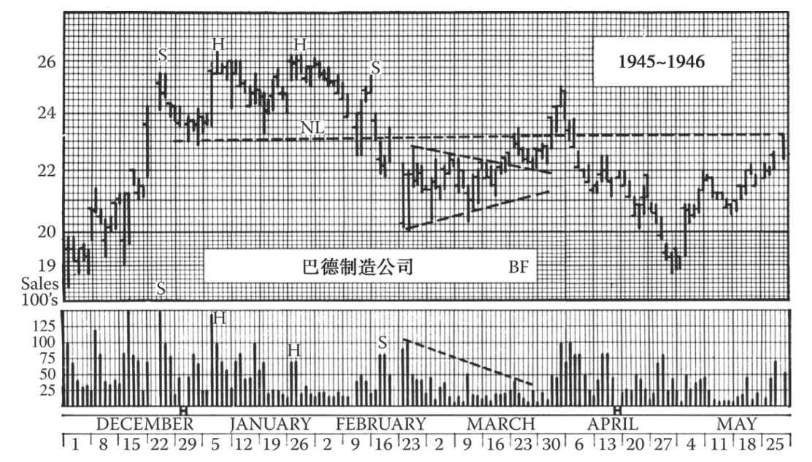
图7-7 巴德制造公司在1946年走出了一个“理想”的复合头肩顶，它有两个头部。请观察成交量的配合情况。复合头肩形一般比简单头肩形更难突破。图中3月底的一波上涨超过了原颈线（一般确认反转形态后的反弹不会这么强），但当时大盘指数也在创新高。回升突破颈线并不能否定反转形态的效力
图7-8 美国机车公司在1946年走出了一个时间跨度很大的复合头肩顶，其成交量虽然显得毫无规律，但后期颓势明显，这是此类形态的常见特征。8月的圆顶反弹（请比较股价与成交量趋势）未能到达原颈线，止步于前期低点形成的阻力线RL（见第13章）。图上两个G点处的突破缺口未得到回补
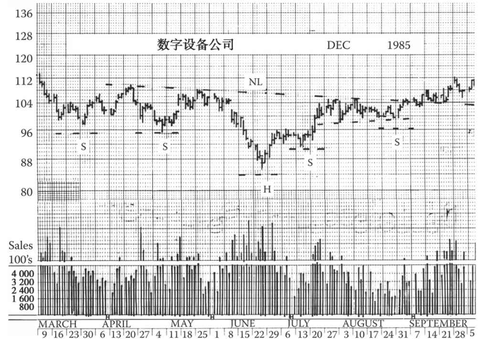
图7-9 从2月的头肩顶开始，数字设备公司大幅下跌直到6月中旬，基本上回吐了1983～1985年涨幅的2/3。夏季的低点是一个大头肩底的头部。后来该股放量突破颈线，发出买入信号
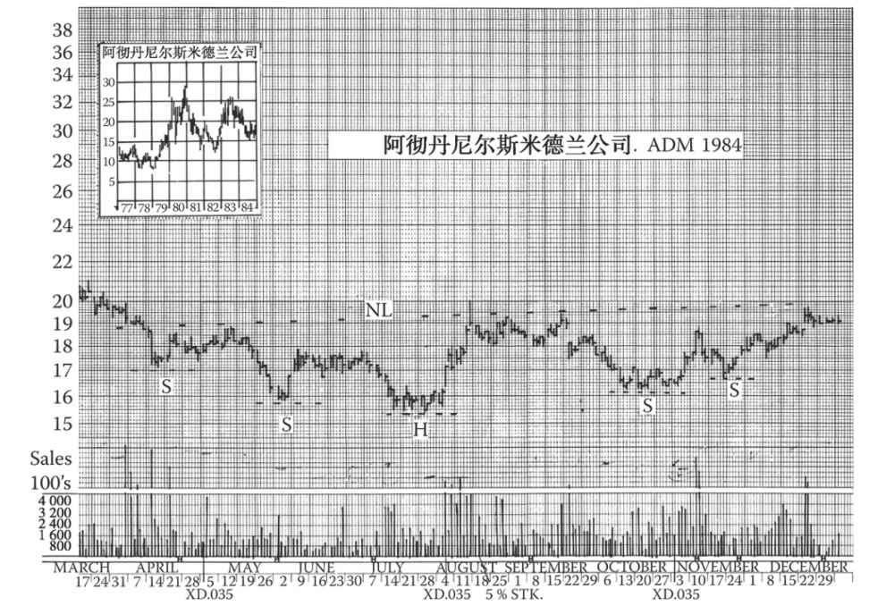
图7-10 阿彻丹尼尔斯米德兰公司在1983年年中冲击1980年高点未果，随后调头大跌，到1984年年中几乎跌去了1982～1983年涨幅的40%。然而，该股似乎于夏季见底。实际上，只要看看4～11月的成交量，将其与价格走势相结合，就能辨识出一个复合头肩底。颈线表明，一旦股价升破20美元（图中NL）就该买入
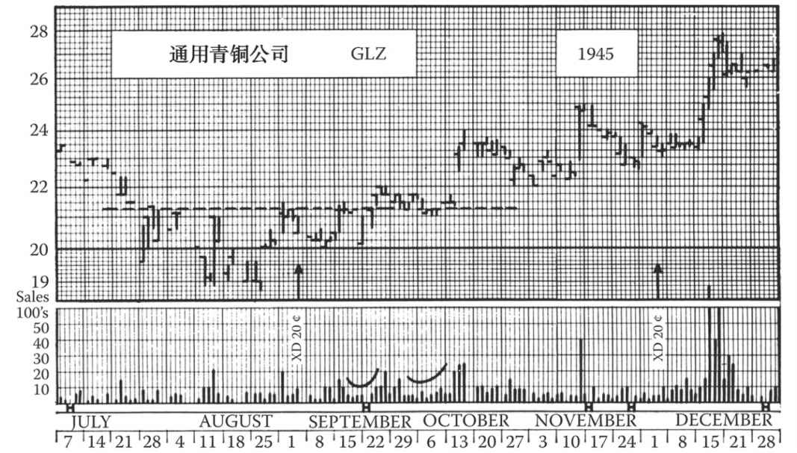
图7-11 这是一个中线复杂底部形态，不够对称，但仍容易辨认。头部形成后的几次缩量调整发出了常规且重要的牛市确认信号。在复合头肩反转形态中，新趋势的启动通常比较迟缓
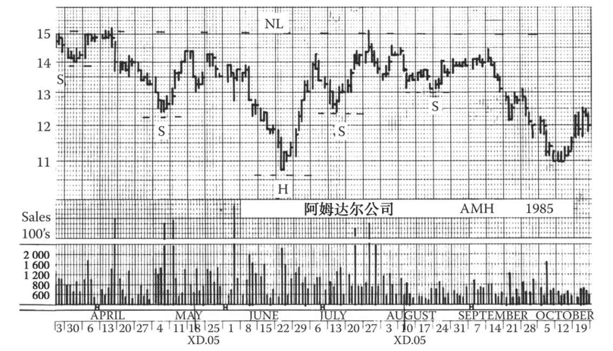
图7-12 美国阿姆达尔公司股价从3月跌到了6月，此后出现了一波强劲反弹，表明牛市还在。随后在当年早前回撤低点形成的支撑线附近，走出了一段横盘走势。总体上看图形很对称（包括成交量），这表明3～9月的股价走势实际上是一个大头肩底。股价升破颈线3%时即应买入，最小上涨目标为19¾美元
有意思的是，复合头肩形的“效力”很容易被夸大。你可能以为，鉴于此类形态的时间跨度和成交量，其预示的反转走势应该强于简单头肩形所预示的。可实际上，至少就紧随其后的走势看，复合头肩形反而效力更小。不论是简单头肩形态还是复杂头肩形态，在趋势反转后最少还能走多远，测算规则是一样的。两类形态间的差异体现在股价到达最小目标后的走势上。当股价首次向下突破一个简单头肩顶时，往往会迅速到达并大幅跌破该形态所预示的最小下跌目标位。而对于复合头肩顶，首次向下突破往往不那么坚决，很少跌破最小下跌目标位。特别是在中线顶部时，复杂头肩顶确立后股价跌到最小目标位的概率更不如简单头肩顶。但如果复合头肩形出现在长期趋势反转时，那么股价最终会大幅超越最小目标位；然而即便在这种情况下，股价通常也会在最小目标位强劲回踩或反抽一次。
7.4 松散的形态
伴随复合头肩形态的成交量一般情况下符合简单头肩形态的“法则”。复合形态发展初期，成交量形态可能会不规则、不容易辨识，但到了后期，其形态与头肩趋势的相关性将显而易见。
对技术派来说，复合头肩形态有一点特别让他们称心。因为复合头肩形态往往趋于对称，所以看着它们不断演变并成形极为有趣。成形后，它们却又好像不愿意形成新的趋势，挑战你的耐心。因此有时候他们容易妄下结论，认为这些形态告吹，从而得出错误信号。实际上，除了效力有所差异，复合头肩形态与简单头肩形态一样可靠。在一些极端情况下，复杂形态确实出错，但仍像简单头肩形态一样，可以给出反转信号。
7.5 圆顶与圆底
复合形态是由简单头肩形态延伸或衍生出来的。下面我们要讲另一种复杂的反转形态，即圆形反转。
在反转形态图表章节刚开始时，我们讲了为什么确立价格趋势的变化需要时间和交易量的配合。头肩形态的反转中，趋势上涨、震荡、再上涨，然后冲顶回撤。在震荡过程中，供求关系不断变化，常常剧烈波动，直至一方压倒另一方。复合形态形成的过程也相似，虽然没有这么剧烈，但在一段时间后，走势也会非常明显。
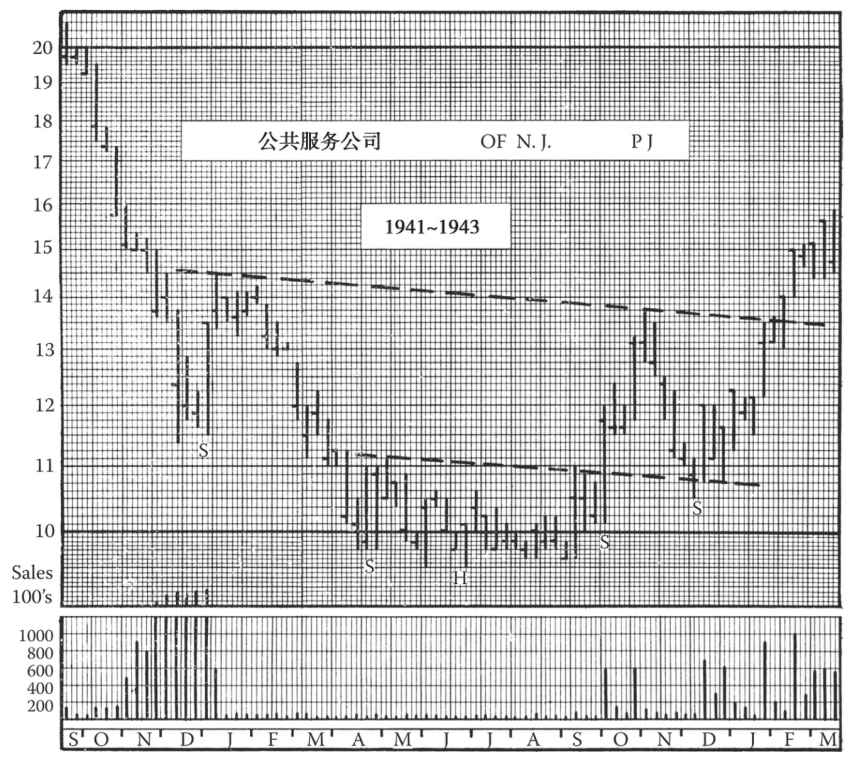
图7-13 这是一个长线反转形态中的头肩形态的变体。其中较小的那个头肩形态很容易被忽视。此外，尽管持续了6个月之久，较小的头肩形本身并没有预示长线趋势的反转。但当公共服务公司的股价于10月冲高，一举突破前一年12月由于巨大供给而维持在12～13美元的水平，预示着一波不止于中线上扬的大行情。但是，直到1943年2月上颈线被击穿且股价收于14美元时，上行趋势的信号才发出。该公司股价于1943年11月又回踩12美元（刚好是旧颈线水平），但之后上涨至30美元。在第13章学习支撑位与阻力位时请再重温此图。该图再次表明，尽管顶部形态常常在较短的时间内形成，但长线底部往往需要数月才能形成，需要耐心等待。虽然需要更长的时间，但大多数顶部形态都有对应的底部形态
圆形反转形态通过简单的形式体现了一个渐进并对称的趋势变化，在这个过程中，多空双方不断拉锯，最终一方胜出造成趋势反转。
假如在过去一段时间内买盘强于卖盘，那么股价势必上涨，正如我们的图表所示。只要买方意愿足够强大，持续超过卖方，那么股价上涨的趋势就不会改变。但如果卖盘逐渐增加，而买盘减少或保持不变，之前的上涨趋势将会放缓。随着卖盘的不断增加，多空打平，股价将在一段时间内保持稳定，不涨不跌（此处不考虑短线和小幅波动）。
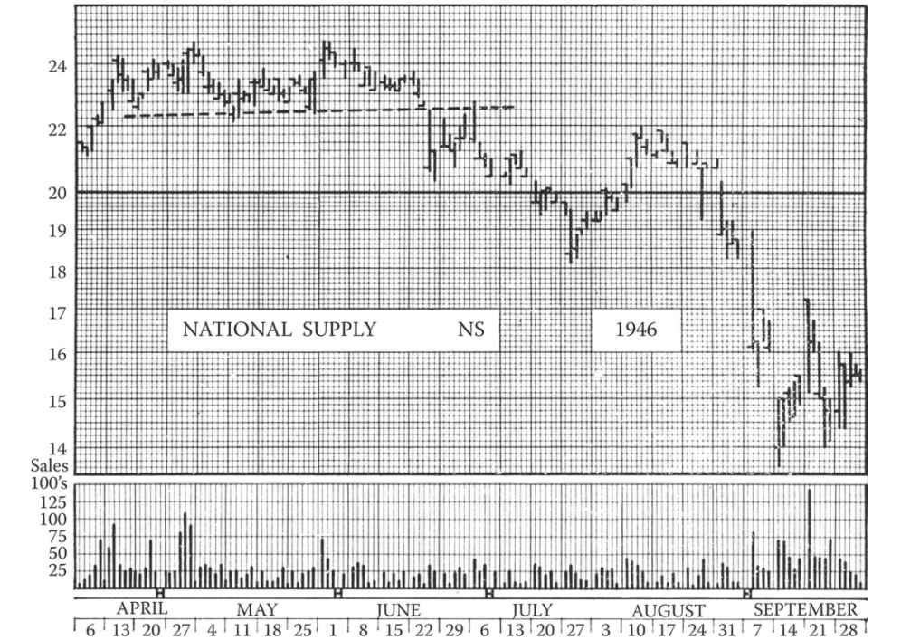
图7-14 这是一个复杂反转形态。有两个分得很开的头部，但仍是一个头肩形态。请研究其成交量形态，注意6月20日的突破和此后的反弹。将其与第12章图12-12的伯利恒钢铁公司的反转形态进行比较
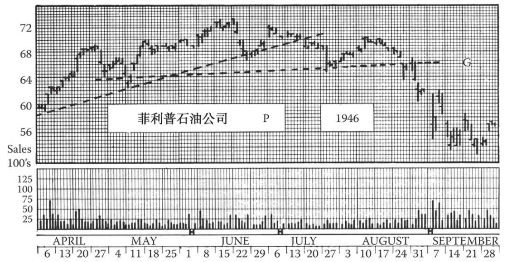
图7-15 高价股的长线顶部反转形态往往持续时间较长，形态较平缓。菲利普石油公司1946年的顶部可以被归类为复合头肩顶或圆顶。一条重要的趋势线（见第14章）于7月被向下突破
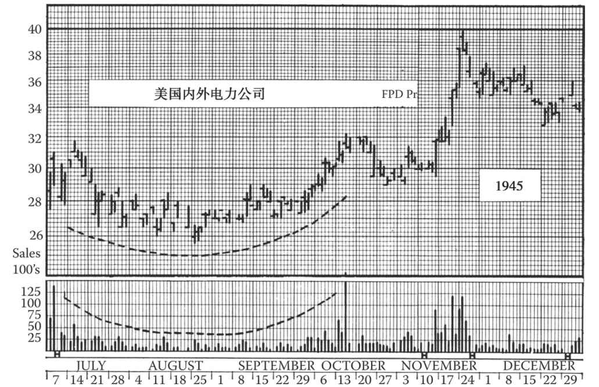
图7-16 1945年“二战”结束后，美国内外电力公司优先股股价随大市反弹，形成了一个圆底。请比较价格和成交量趋势。至10月4日，其影响已显而易见
假定买卖双方的力量继续按之前的趋势发展，卖盘不断增长，直至超过买盘，那么市场的趋势就开始反转了。卖盘超过买盘意味着股价将会下跌。如果供过于求的情况稳定持续下去，股价就会回落，逆转之前的涨势，并加速下跌。
圆底常被称为碗形或碟形，而圆顶有时则被称为倒碗底。不论圆形反转的形成多么自然，该形态都不如头肩形出现得频繁。圆底多见于低价股，并需要数月才能成形。1942～1943年，市场上低于10美元的股票中有不少都出现了这样的形态。（需要注意的是，在长线涨势中，低价股会频繁出现长达2～3个月的碟形底部。此类形态的特点和意义将在“整固”一节中进行讨论。）
圆顶极少出现于低价股和中价股走势中，但偶尔见之于高价普通股。这些股票评级通常在AA级以上，受到富裕投资者追捧，但不受普通股民关注。圆顶常常也会出现于高评级优先股，因为一是资金会寻求保守投资，二是这些资金看中利息回报。而这两个因素的变化都十分缓慢。造成股价剧烈波动的投机行为几乎不会出现于高评级优先股中。同理，低价、投机性的普通股一般不会出现圆顶，因为这些股票的顶部通常是疯狂的散户短线投机的结果。
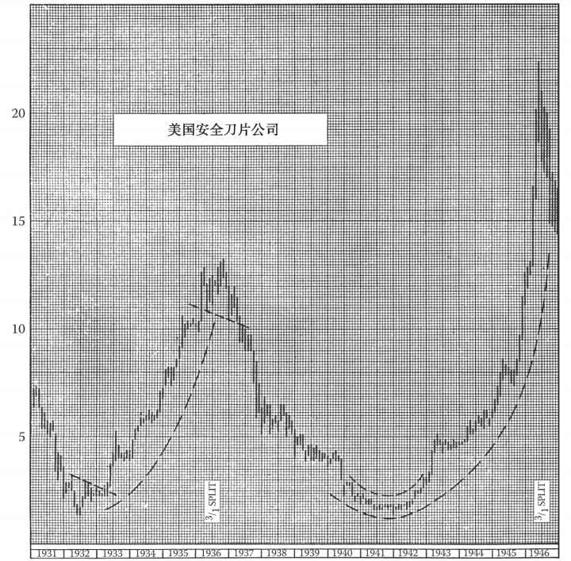
图7-17 此图是以等差坐标绘制的月线图。美国安全刀片公司1932年的长线趋势底部和1936年的牛市顶部都呈现出头肩形态。该公司1942～1946年的牛市始于一个长达2年半的圆底。月线图的重要性显而易见
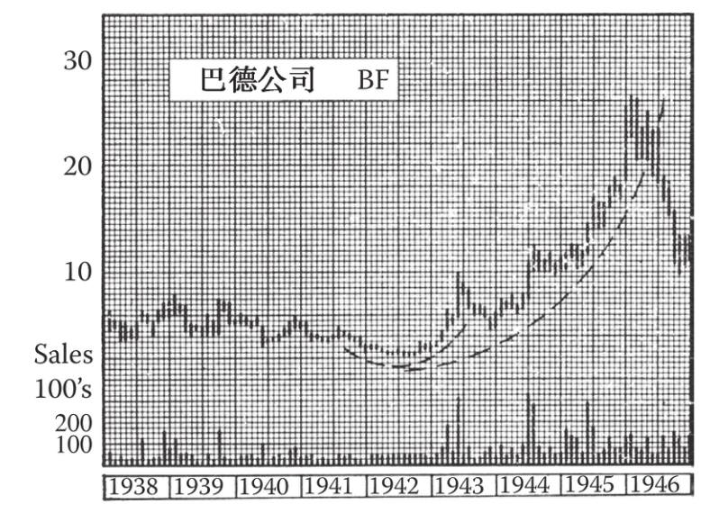
图7-18 此图是巴德公司的月线图。请注意1942年是碟形形态出现的第1年，这是一个具有重大意义的圆底。该公司股价在1942年不到3美元，到了1946年已经超过26美元
7.6 圆形反转对于成交量的影响
我们一直没有提到伴随着圆形反转的成交量走势。事实上，该形态的成交量走势不仅有趣而且有用。以圆底为例，成交量的走势和股价的走势一样清晰。圆底的形成就是一个买盘逐渐征服卖盘的过程。一开始，抛压逐渐减小，成交量逐渐萎缩；此时尽管买盘仍然虚弱，股价仍在下跌，但跌速放缓，曲线走平。在最低点，多空力量达到均衡，成交量极度萎缩。之后，买盘开始增多，股价逐渐上扬，交投再次活跃起来。成交量随趋势放大，直至达到顶点（此时的股价呈直线上升的状态）。
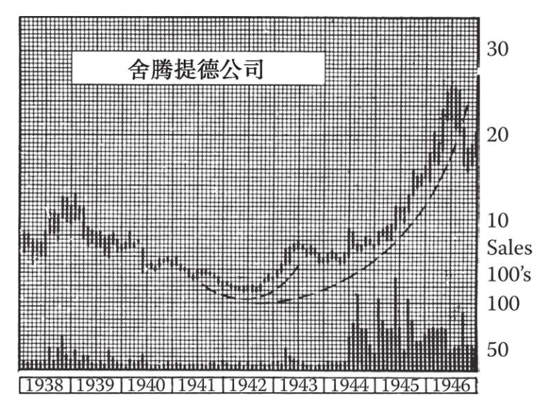
图7-19 舍腾提德公司的股价也出现了圆底。该公司股价在1942年不到2美元，而1946年已经突破了25美元。请注意1940～1945年的成交量走势。第15章将会详细讨论图表中的长线上涨走势
在此类形态中，若将图表底部每天成交量的顶点连接起来，就是一条往往与价格的“碗形”走势大致平行的弧线。这些形态若出现在一段较长的跌势之后，则有重要的技术意义，几乎总是预示着长线趋势即将改变，大牛市近在眼前。然而，后面的大牛市很少会在几周内就以暴涨暴跌告终；相反，它往往是“慢牛”行情，夹杂着数次调整，使缺乏耐性的交易者出局，最终给坚持到底的投资者带来可观回报。
让我们再次强调，只有在碗形底部成交量极度萎缩的情况下，才可信任碗形走势的技术意义。在股价走过最低点后开始第一波回升、成交量小幅放大时，可能出现不成熟的突破。在没有任何信号的情况下，突如其来的买盘会猛烈推高股价，持续一两个交易日。这种现象很常见，但随后股价往往快速回落至先前的通道内，恢复圆底走势。这种不成熟的突破对交易者来说并不危险，但他如果盲目追涨，就会认识到其实应该再等等。图7-20就是一例。
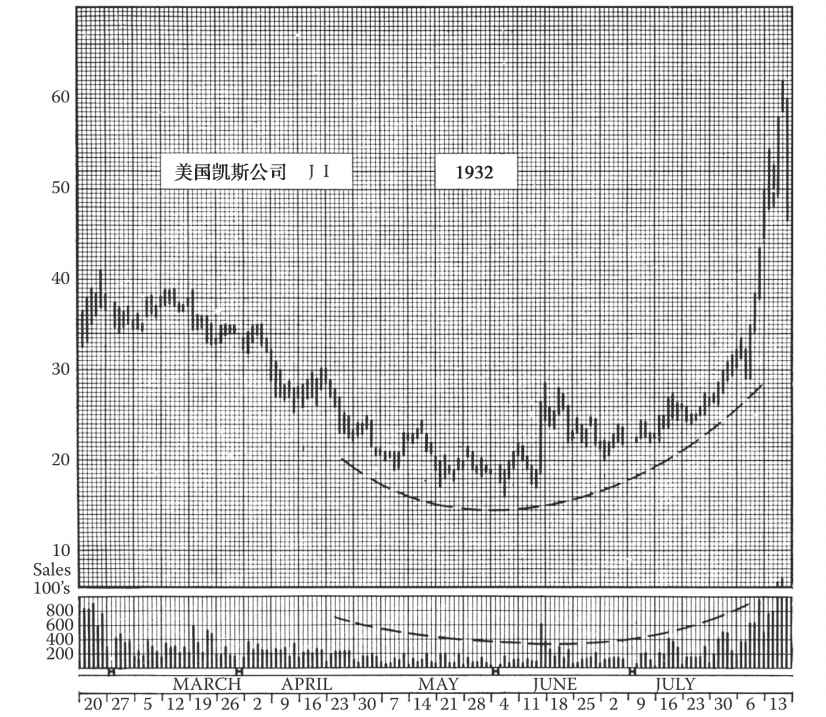
图7-20 美国凯斯公司在1932年长线趋势反转时的圆底是一个经典案例。6月10日股价跳涨，之后回归碟形，该现象常见于圆底
第16章有一些图展示了2005年的重要圆底及随后直至2011年的走势。
7.7 休眠底
有一种长线底部形态被称为“休眠底”，是圆底的一种变体，实际上是一种极端的“大平底”。它常见于流通股数量很少的股票。当市场蓬勃向上时，此类个股每天的成交量可能只有200或300股。然后在几周乃至几个月里，成交量极度萎缩，甚至出现零成交的日子，股价波动幅度很小。
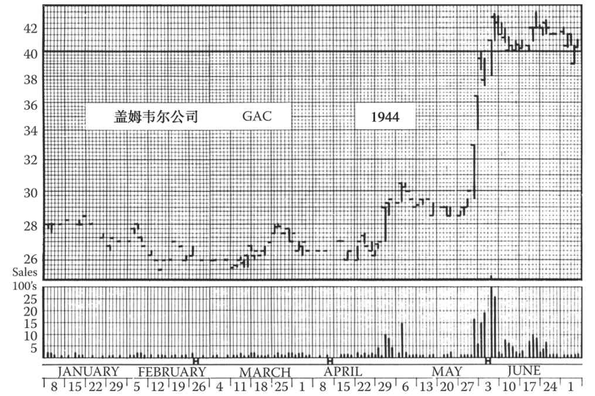
图7-21 这张图展示了休眠底的极端情形。在最初的4个月里，有许多天成交量为零。“买入”信号出现在4月26日。请注意成交量
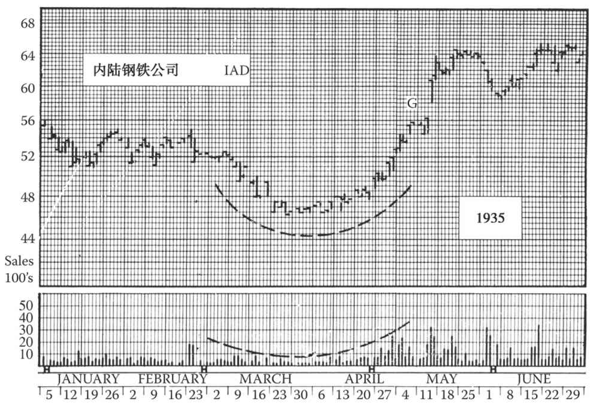
图7-22 1935年3月的调整形成了多个圆底。图上这个接近于休眠底。股价在G点突破阻力位上行，所形成的缺口直至1937年年末才得到回补（见第12章）
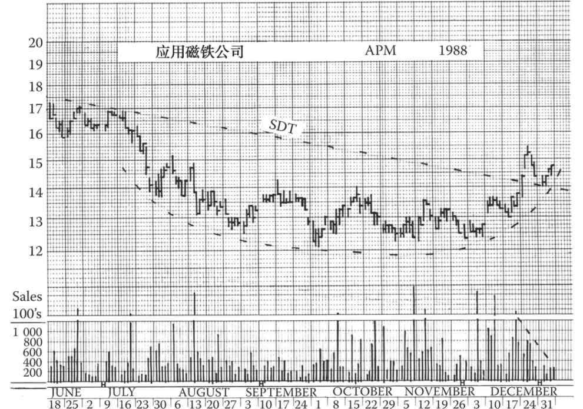
图7-23 应用磁铁公司股价1988年夏季从阻力位（17½美元）下跌，最低跌到11美元。7～11月缓慢反弹，构筑了一个碟形底，量价配合理想。值得注意的是，这个碟形底的低点高于2月的低点，也就是说低点开始逐渐抬升。随后股价放量冲破短期下跌趋势线，发出新一波上涨信号
最后，交投可能突然放大。买盘涌现，股价飙升。这样的“休眠形态突破”可能是一波不成熟的行情，正如我们在讲圆底时所说的那样，随后还将有几周休眠走势；也可能是逐级上攻行情的第一波，随后每一波上攻之间的时间间隔越来越短，直到持续上涨趋势确立。在任何情况下，休眠形态突破一般表明主力在建仓。
休眠底的形成原因很好理解。在流通股很少、卖盘稀缺的情况下，投资者（或许是内幕人士）大举扫货的结果只能是使股价涨上天。于是他们耐心地等待筹码，一旦卖盘出现就买进，但不主动提高报价，直到卖盘枯竭。然后他们小幅提高报价，如果能诱出更多卖盘，就继续耐心地等待筹码。
7.8 顶部的成交量形态
与底部相比，圆顶很少有清晰的成交量形态。实际上，在股价构筑圆顶期间，成交量往往较大而无规律。仔细观察的话，你会发现在股价走过最高点后，随着股价的短线波动，成交量出现某些由牛转熊的迹象，但在大多数情况下，成交量的预警信号只有在跌势开始加速后才变得显著。
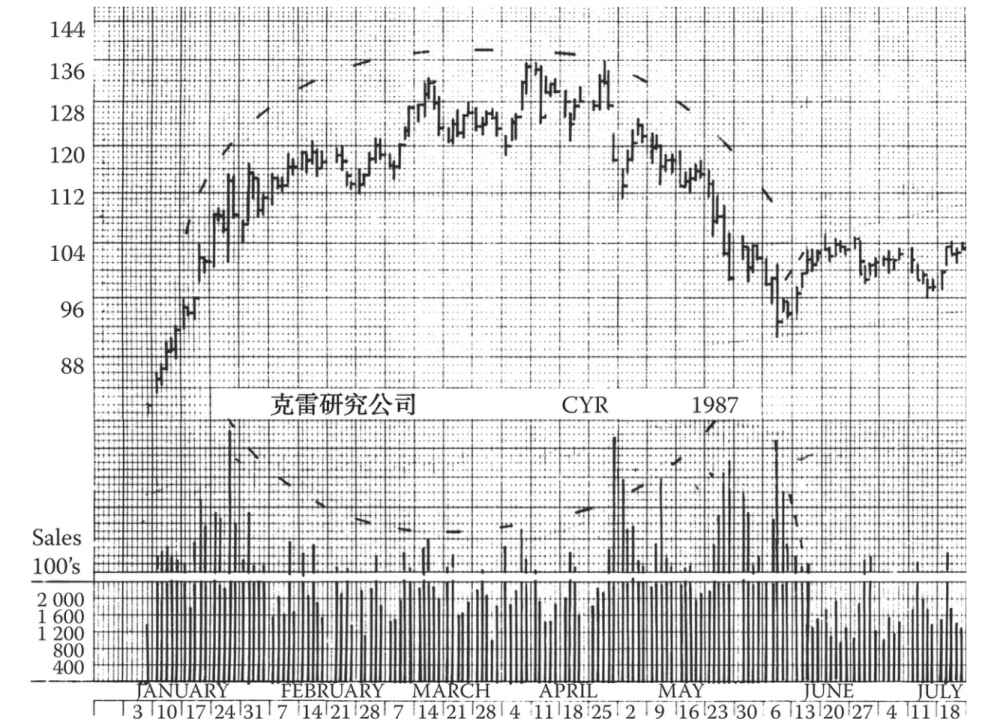
图7-24 克雷研究公司曾强势上涨10多年。股价1976年不到1美元，1987年4月末到达135¾美元，随后向下跳空，跌破7周以来的钻石顶，开启熊途。但在1月中旬的放量反弹后，该股也形成了一个明显的圆顶。钻石顶被突破后，该股放量跌至支撑位，成交量呈现清晰的凹形，这一顶部形态有很强的技术意义
对于圆形反转，我们没有预测最小目标位的公式（除了我们在头肩模式中提到过的起码标的，也就是说，不应该期望它们会出现比先前反方向上的价格摆动幅度更大的运动），但圆形反转几乎不会出错，其技术意义可大致根据之前的涨幅和圆形的时间跨度来估算。所以，周线图和月线图上的圆形反转具有更大的技术意义。
因此，我们应该关注周线图和月线图。迄今为止，我们只详细讨论了日线图上的各种形态，但它们也出现在周线图和月线图上，且具有同样的技术意义。周线图和月线图无法清晰反映成交量的变化（一周中的某几天可能出现天量或地量，但当周总成交量却无法反映每天的变化情况），但其重要性偏低，几乎可忽略。头肩顶在月线图上尤其常见，值得关注。事实上，周线图或月线图上任何清晰、完整的形态都很重要（请记住第6章里说的“反转形态需要有一定的空间来反转”）。
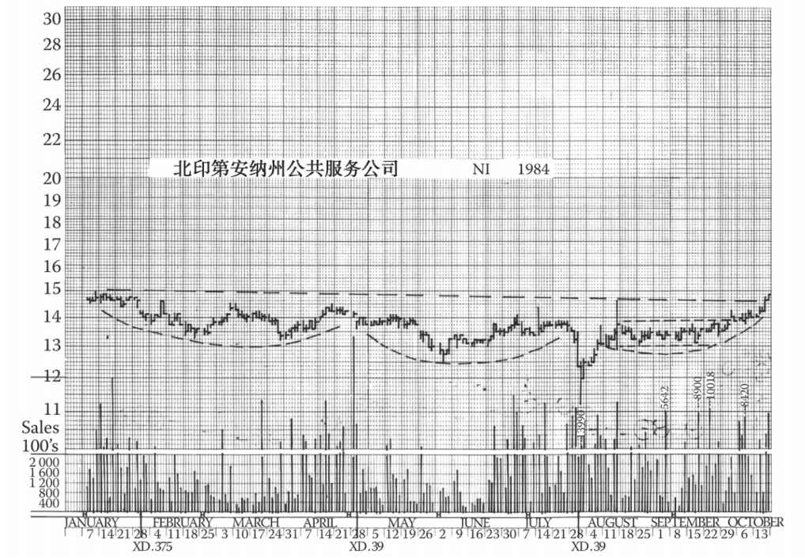
图7-25 北印第安纳州公共服务公司股票在1984年连续构筑了多个圆底。虽然这一形态并不预示着股价将飞涨，但股价最终放量冲破了阻力位
[1] 鉴于中外文化差异，头肩底的说法更容易被中国读者理解，后文将沿用头肩底的说法。—译者注